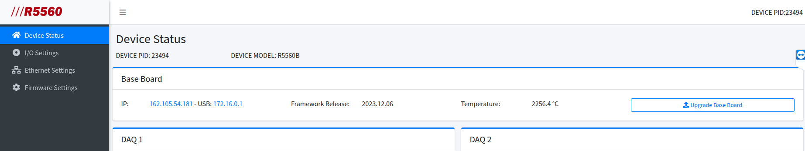
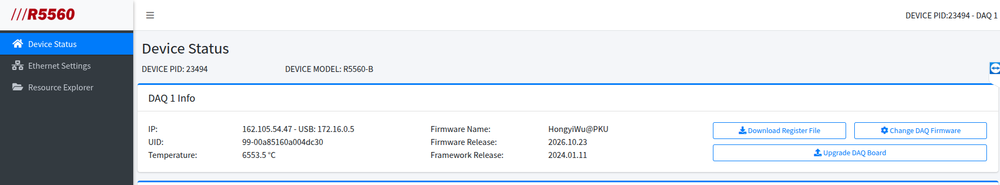
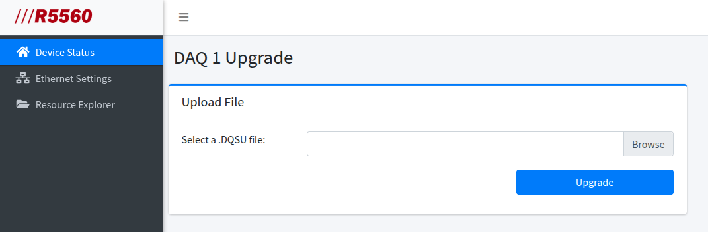
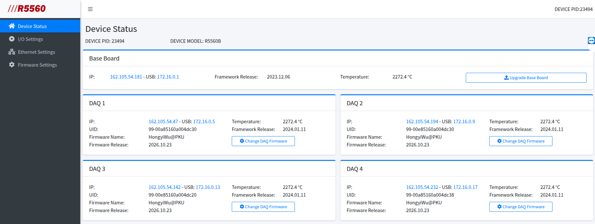
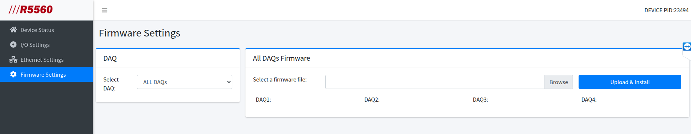

固件
最新固件
- 母板
R5560_Base_Update_2023.12.6.0.bsu
- 子板
R5560_B_DAQ_Update_2024.01.11.3.dqsu
- 用户固件
2026102301.niu
固件更新
检查系统中 base 主板的固件版本。如果版本落后于最新固件版本，更新为新版本。

检查子版的为型号，确认是否为最新固件。如果不是最新的，逐一登陆每个 DAQ 的网页，通过 “Upgrade DAQ Board” 按钮进去升级页面。


检查 DAQ1 到 DAQ4 的固件 “Firmware Release” 是否是最新的用户固件版本，如果不是最新的版本，通过左侧的 “Firmware Settings” 进入 DAQ 固件更新界面，可同时更新 4 个 DAQ。

